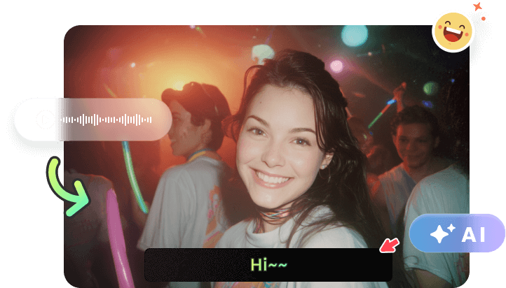

录咖横评：AI 视频工具堆里，它靠什么把会议和营销两条线做透
录咖不是市面上功能最全的 AI 视频工具，却是少数把 Chrome 扩展、云端处理、算粒计费三件事拧成完整闭环的选手。本文从同类 SaaS 的坐标系出发，拆解它的核心差异化、取舍和适用场景。
定位：同类工具里，它站在哪个位置
如果你最近在找 AI 视频处理工具，打开搜索结果会看到一堆"AI 字幕生成""视频自动剪辑""一键翻译配音"的独立产品——每家都把某一个点做了，但串不成线。录咖（Reccloud）是另一个方向：它不追求单点极致，而是从 Chrome 扩展录屏这个入口切入，把录屏 → 转写 → 总结 → 字幕 → 翻译 → 视频生成整条链都收进了云端账号，用"算粒"统一计费。
这个路线在同类 SaaS 里其实不多见。大厂方案要么是单体剪辑软件加几个 AI 插件（Adobe Premiere + AI 工具、剪映云版），要么是纯 API 服务供开发者调用（阿里云语音识别 + 视频翻译）。系统自带的（QuickTime + Final Cut Pro）又没有云处理能力。录咖的定位就是夹在中间——给中小团队和个人创作者一个"不装本地软件、按秒按量付费、浏览器里全搞定"的折中方案。
我单独写它的原因很简单：最近半年我手上跑过四款同类工具，录咖是唯一一款在"会议录音全流程"和"营销广告视频生成"两个场景里都能做到 1 小时视频 30 分钟出活的，而且不需要你手动管理中间文件。录咖的产品主页在 推广站，可以先扫一眼它的功能全貌。

差异化一：Chrome 扩展入口 + 云端自动流水线
同类工具的普遍痛点是"文件管理地狱"——你在 A 工具录了屏，下载下来，上传到 B 工具转写，转写文本再复制到 C 工具做总结，总结完的纪要要手动粘贴到飞书文档。每一次文件在不同工具之间搬家，都是一次时间消耗 + 一次版本错乱风险。
录咖的解法很直接：Chrome 扩展是唯一入口。装完扩展，会议开始前点一下"当前窗口"或"整个屏幕"，开启麦克风，倒计时 3 秒开录。会议结束点停止，录屏文件自动上传到录咖的"我的空间"，然后自动跳转到 AI 语音转文字页面。你全程不需要手动下载、上传任何文件。
样本里那个"1 小时会议录音全流程"给了一个很直观的数字对比：传统做法从录音到双语字幕出片要 10~20 小时，录咖全流程跑下来 30~60 分钟。省的那 9 小时不是 AI 处理速度的功劳，是文件管理环节被直接砍掉了。
这一点上，大厂方案反而落后一步——Adobe Premiere 还是得你先录完导入工程，剪映云版虽然有云存储但不支持浏览器内录屏自动触发。Chrome 扩展 + 云端存储的组合，是录咖在同类工具里做对的第一个赌注。
差异化二：AI 视频生成走 Agent 对话模式，不是提示词盲盒
市面上大多数 AI 视频生成器的交互方式是"填提示词 → 点生成 → 等结果 → 不满意就改提示词重来"。这个流程的核心问题是：你不知道生成器能做什么、不能做什么，提示词怎么写才算"好"，全靠踩坑积累。
录咖的 AI 视频生成用了另一套模式——Agent 对话。比如你说"做一个 30 秒护肤霜抖音广告"，Agent 会反过来问你三个问题：卖点是什么、什么视觉风格、要不要配音字幕。三轮对话下来，Agent 已经帮你把分镜脚本写好了，甚至还会主动建议"钩子可以再抓人一点"。你确认分镜没问题，Agent 才开始逐段生成画面、调用文字转语音配旁白、自动生成字幕、拼接成 MP4。
这个模式的优势不是它生成出来的画面质量一定比别家好，而是可预期、可迭代。同样的 30 秒视频，提示词模式你可能跑 3~4 轮才出一个能用的，Agent 模式 3 轮对话就锁定了分镜方向，后面只是微调细节。样本里那个蓝牙耳机产品展示视频，分镜模式的 60 秒成片消耗 2880 算粒，Agent 模式的护肤霜广告 30 秒消耗 1440 算粒——算粒消耗和时间投入是正相关的。
差异化三：算粒计费 + 基础/高级模型分级，把选择权交还给你
同类工具的计费模式大致分两种：按月订阅（不管你用不用都扣钱）或者按次固定价（一段视频一次多少钱）。录咖的算粒模式更接近按量付费的 API 服务——每个功能有明确的算粒单价，用多少扣多少。
| AI 功能 | 算粒单价 | 时间维度 |
|---|---|---|
| AI 语音转文字 | 1 算粒 / 分钟 | 按音频时长 |
| AI 音视频总结 | 1 算粒 / 分钟 | 按源文件时长 |
| AI 字幕生成 + 翻译 | 1 + 2 算粒 / 分钟 | 原识别 + 翻译翻倍 |
| AI 视频生成（Seedance 2.0 720P） | 48 算粒 / 秒 | 按成片时长 |
| AI 去字幕 | 20（基础模型）/ 30（高级模型）算粒 / 分钟 | 按视频时长 |
这种分级的好处是你不用为自己不需要的算力买单。AI 去字幕的基础模型处理纯色背景字幕足够用（20 算粒/分钟），复杂纹理背景才需要高级模型（30 算粒/分钟）。先跑基础试试，不行再升级——这种试错成本在订阅制工具里是不可想象的（你已经付了月费，不用也扣了）。
但反过来，算粒模式也给重度用户带来了可预期的成本压力。样本里那个 30 秒营销广告用了 1440 算粒，而普通包年只有 3000 算粒——如果一个月要跑 10 个这样的广告，你得算清楚是继续堆包年还是考虑换成订阅制工具。
取舍：它为这些优势付出了什么
没有完美的工具，录咖的三条差异化路径也各自带来了代价。
第一，云端依赖 = 网络质量就是你的产出上限。录咖所有 AI 功能跑在云端服务器上，处理中如果你的 Wi-Fi 断了或带宽被占了（比如公司网络防火墙限速、云盘后台同步），处理速度会明显变慢甚至暂停。样本里的速度排查给了一组参考：正常 1 分钟音频 10~20 秒转完，高峰期（晚上 8~10 点）可能翻倍，服务器排队时甚至会卡好几个任务。解决办法要么换凌晨/早上的非高峰时段，要么换手机热点——这些操作成本在本地软件里是不存在的。
第二，Chrome 扩展的单一入口 = 脱离浏览器就没法用。如果你在 Safari 或 Edge 里开了会议、或者会议是线下只有录音没有录屏，Chrome 扩展就派不上用场了。这时候你只能事后手动上传录音文件到语音转文字功能。同样地，移动端浏览器（Safari iOS、Android Chrome）对后台标签页的 CPU/网络限制很严，AI 处理中切走标签页很可能暂停。官方文档里明确建议"处理 AI 任务时让录咖标签页保持在前台"——这对习惯多任务的人来说是个不大不小的约束。
第三，同时处理上限。免费版和普通会员只能同时处理 2 个任务——你提交了一个 AI 语音转文字，又开了一个字幕生成，第三个任务得排队等。商业会员上限是 10 个。对中小团队来说这可能不够用，但换商业会员又要加价。这个约束在订阅制工具里通常不存在（Adobe Premiere 本地处理不限制并行任务数）。
选购结论：什么样的人选它，什么样的人选别的
选录咖的：你是中小团队或个人创业者，需要"会议录音 → 纪要 → 双语字幕"这条链路能低成本高频运转（每月 4~8 次会议处理），或者你是跨境电商/短视频创作者，需要 15~60 秒的营销广告视频能快速迭代（Agent 对话模式比提示词盲盒省时间），而且你能接受浏览器入口 + 按量计费的模式。下载页 可以先试用免费额度感受一下，进阶玩法和边界判断可以翻 文档站。
不选录咖的：你有重度并行处理需求（每天都在跑 5+ 个长视频 AI 任务），或者你对本地文件有强控制权需求（不敢把原始录屏上传到云端），或者你预算充足、愿意为专业剪辑功能买单——那 Adobe Premiere + AI 插件、或者剪映云版这种本地为主的方案更适合你。
一句话推荐：如果你的视频处理需求集中在"会议内容结构化"和"营销短视频快速迭代"两条线，录咖是目前同类里路径最短、效率最高的选择；但如果你需要全能型的专业剪辑工作台，它的云端依赖和并行限制会让你很快撞到天花板。
相关资料我同步到了三个仓库：GitHub 主库、Gitee 镜像、GitCode 同步。